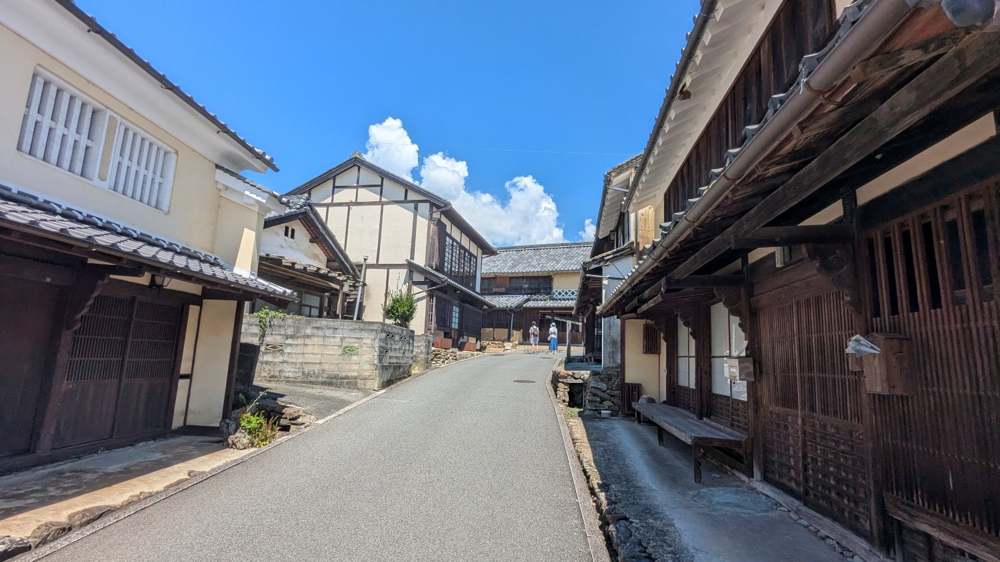

古蹟與老街 2025年10月05日 破魚 日本的古蹟與老街，是穿越時空的旅程，引領人們踏入昔日的輝煌與風華。每一塊石板、每一棟木造建築，都靜靜地訴說著百年來的故事與文化底蘊，等待著旅人前來細細品味。走在其中，彷彿能聽見歷史的迴響，感受那份獨有的寧靜與懷舊氛圍。 佛生山 在充滿歷史感的街道上漫步，探訪古老的寺廟與商家，轉角又能遇見時尚的咖啡廳、雜貨店與餐廳，這種充滿驚喜的對比感，構成了佛生山獨一無二的旅行體驗。 閱讀全文 →  八日市護國傳統建物保存地區 約600公尺長的街道，兩側林立著江戶至明治時代的傳統町屋與豪宅，走在這裡彷彿像是「穿越時空」一般，感覺時間的流動都變慢了。 閱讀全文 → 三津濱老街 漫步在錯綜的巷弄間，可見昔日的商家、土藏與洋風建築交錯林立，彷彿穿越了時光隧道。 閱讀全文 →


留言板